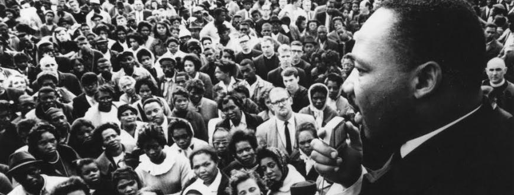

Martin Luther King Jr. The man who worked for the under-priviledged.
1944: Graduates high school at age 15, enters Morehouse College shortly thereafter.
1948: Receives BA in sociology from Morehouse College at age 19.
1951: Receives degree from Crozer Theological Seminary (Chester, Pa.), enrolls in Boston University Ph.D program.
1953: Marries New England Conservatory music student Coretta Scott; they eventually have four children.
1954: Becomes minister of Dexter Avenue Baptist Church, Montgomery, Alabama.
1955: Receives Ph.D in systematic theology from Boston University.
1962: King's growing opposition to the Vietnam War angers President Johnson, prompts many white activists to switch to anti-war activities.
1966: Growing popularity of the black power movement, blacks stressing self-reliance and self-defense, indicates King's influence was declining, especially among young blacks.
1967: King plans Poor People's Campaign; advocates redistribution of wealth to eradicate black poverty.
1968: King is assassinated in Memphis, during visit to support striking black garbage collectors; violent riots erupt in more than 100 U.S. cities.